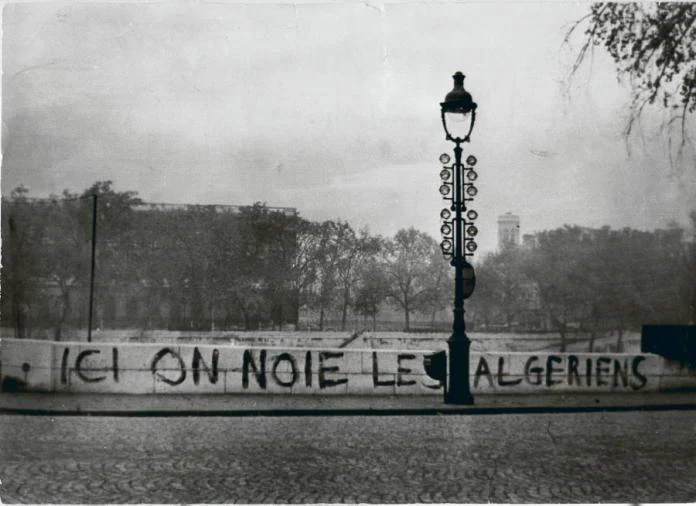

Publication d’archives
17 octobre 1961, un crime d’État occulté.
Date indiquée par Facebook · 17 octobre 2022
Texte conservé avec la publication
Contexte du dossier
Le souvenir de Charonne est rappelé le 8 février 2021 ; l’année suivante, l’appel du Comité Vérité et Justice pour Charonne annonce les hommages du soixantième anniversaire à Paris. Neuf morts, une manifestation contre l’OAS et pour la paix en Algérie : la répression ne doit pas être effacée. Les publications d’octobre 2021 et 2022 reviennent, elles, sur le massacre du 17 octobre 1961 et mettent en cause les limites de sa reconnaissance par l’État. Ces séquences associent la mémoire des victimes au refus du racisme et à la responsabilité des institutions. Elles réclament une reconnaissance à la hauteur des crimes.

Sources
Archive rouge · export Facebook · AR-0002-FB-01836
À lire aussi · Marcel Paul, au-delà d’un nom de parking